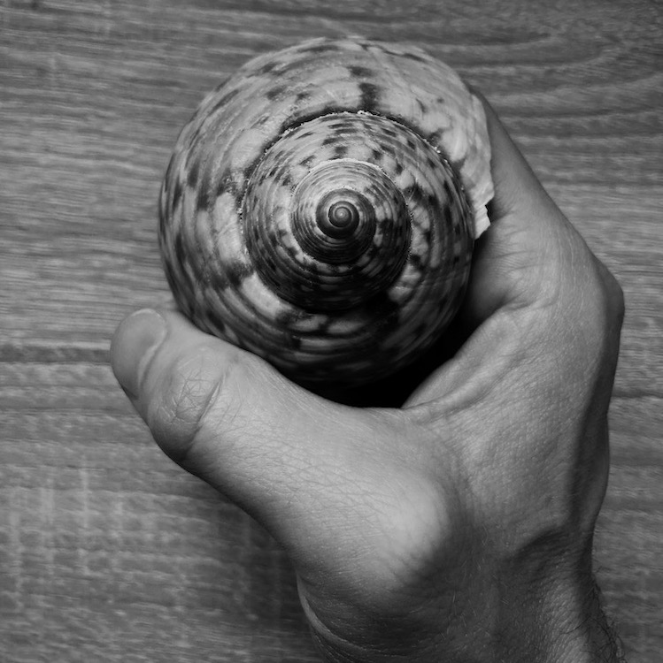

Black and white photography speaks directly to the soul. Black and white photos have a timeless, classic quality that goes beyond the ordinary.
Shooting in black and white forces a photographer to look past the superficial details and study how the interplay of light and shadow give an image form. Shooting in black and white can help you take your photography to the next level by mastering the essentials of lighting and composition.
Noir Camera is the best black and white camera for your iPhone. Its simple interface allows you to directly control the quality of the light coming into your camera. This includes:
Whether you are learning about cameras and want to become a better photographer, or you are an already experienced photographer who wants to capture beautiful black and white photos with the camera in your pocket, Lucent Camera is the camera for you.

Our privacy policy is very simple:
We do not track you and we do not collect or store any data from your device.
In general we would love to hear from you. Whether you are having issues, or whether you would like to say hi, please reachout to support@noir.photography
Also, if you take any photos that you would like to share with us please send them our way.